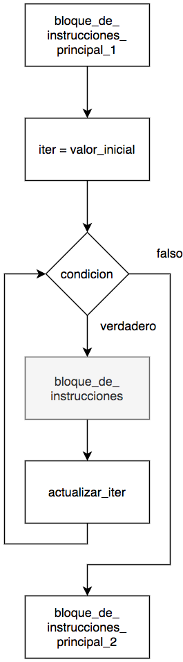

Teoría 304
Composición Iterativa III
1 Tipos de bucles
- En la sesión anterior, vimos que los bucles tienen usos muy diversos:
- Validar datos, acumular cálculos, repetir mensajes por pantalla, etc.
- A efectos prácticos, todos cumplen una de estas estructuras:
- Repetir una acción hasta obtener un resultado deseado.
- Repetir una acción un número determinado de veces.
- La diferencia entre ambos radica en si previamente conocemos o no el número de iteraciones.
Sumar números del 1 al 5:
- Sabemos que son 5 iteraciones.
1.1 El patrón se repite
- El bucle
whilepermite cubrir ambos casos, y es la opción más flexible. - Sin embargo, cuando el número de iteraciones es conocido de antemano, siempre repetimos el mismo patrón.
Cuando no necesitamos valores de i:
- Elementos:
- Una variable iteradora:
i - Una condición de finalización del bucle:
i < NUM_ITERACIONES - Un incremento de la variable iteradora:
i += 1
- Una variable iteradora:
- Este patrón es tán común que la mayoría de lenguajes de programación tienen una estructura específica para facilitar usarlo:
- La sintaxis:
for
- La sintaxis:
- Su funcionamiento específico varía según el lenguaje.
- En el caso de Python, técnicamente no implementa el patrón
forsinofor-each.- AÚN NO VAMOS A ABORDAR ESA DIFERENCIA.
- De momento, utilizaremos el
for-eachcomo si fuera unfor.
2 El bucle for
2.1 Composición Iterativa: for
- La estructura
fores una forma simplificada de implementar un buclewhileque itere un número determinado de veces. - Se encarga automáticamente de:
- Inicializar la variable iteradora con el primer valor.
- Incrementar la variable iteradora al final de la iteración.
- Evaluar la condición
i < VALOR_FINAL
- El segundo valor que pasamos a
rangeNO se incluye en las iteraciones.

2.2 Uso de range()
- Es muy importante tener en cuenta el funcionamiento de
range()para no cometer errores off by one.range(N, M)genera números en el rango[N, M).
- El
5NO se incluye en las iteraciones.
2.2.1 Ejemplo: Repetición de un mensaje 100 veces (for)
- Los valores de
iirán de 0 a 99. - Eso da un total de 100 iteraciones.
Es posible que tu editor avise de que la variable i no se usa en el código. Puedes llamarla _ (barra baja) para indicar que no se va a usar, pero siempre tiene que haber una variable después de la palabra clave for.
2.2.2 Ejemplo: Sumar números del 1 al 5 (for)
- Aquí sí necesitamos usar valores específicos de
i.- Usamos
5+1porque resulta más explícito que6.
- Usamos
2.3 Cuando usar for y cuando while
- ¿Conozco previamente el número de iteraciones (o rango de valores) que necesito?
- Si:
for - No:
while
- Si:
- Pistas (son sugerencias, no reglas):
- Si te encuentras creando una variable
iy la condición tiene la formai < N:- Seguramente puedas usar
for.
- Seguramente puedas usar
- Si te preguntas cómo puedes evaluar una condición distinta de
i < N:- Probablemente necesites usar
while.
- Probablemente necesites usar
- Si te preguntas cómo puedes interrumpir un bucle
fora mitad:- Casi seguro que necesitas usar
while.
- Casi seguro que necesitas usar
- Si te encuentras creando una variable
2.3.1 Ejercicio: Cuándo usar for y while
- ¿Qué tipo de bucle usarías para cada uno de los siguientes casos?
Pedir un dato a un usuario hasta que introduzca un valor correcto.
whileCalcular el factorial de un número.
forPedir un número al usuario y mostrar los números pares hasta ese número.
forSolicitar un número PIN con un máximo de 3 intentos.
whileInvertir las cifras de un número.
whileSolicitar 5 números al usuario y mostrar la media.
forSolicitar una secuencia de números al usuario y mostrar la media.
whileSolicitar un numero N, solicitar luego N números al usuario y mostrar la media.
for
2.3.2 Ejemplo: Sumar números hasta n
Este programa solicita un número n al usuario y suma todos los números hasta n.
Introduce un número:
5
La suma hasta 5 es 15
5
La suma hasta 5 es 15
2.3.3 Ejemplo: Factorial (for)
Este programa solicita un número n al usuario y calcula el factorial de n.
Introduce un número:
5
5! = 120
5
5! = 120
2.3.4 Ejemplo: Media de 3 números
Este programa solicita 3 números al usuario y calcula la media.
Introduce el número 1:
2
Introduce el número 2:
4
Introduce el número 3:
6
La media de los números es 4.0
2
Introduce el número 2:
4
Introduce el número 3:
6
La media de los números es 4.0
2.3.5 Ejemplo: Media de N números
Este programa solicita una cantidad de números n al usuario y, después, esos n números y calcula la media.
Introduce una cantidad:
3
Introduce el número 1:
2
Introduce el número 2:
4
Introduce el número 3:
6
La media de los números es 4.0
3
Introduce el número 1:
2
Introduce el número 2:
4
Introduce el número 3:
6
La media de los números es 4.0
3 Usos avanzados de for
3.1 Usos avanzados de range()
- La función
range()es la encargada de determinar el rango de valores que se van a iterar. - Realmente existen tres formas de usar
range():range(N): Genera valores desde0hastaN-1.range(N, M): Genera valores desdeNhastaM-1.range(N, M, S): Genera valores desdeNhastaM-1incrementandoi+=S.
- Es decir:
range(5)=range(0, 5)=range(0, 5, 1).
Aunque resulte tentador escribir menos, es recomendable ser explícito y evitar range(N) en favor de range(0, N).